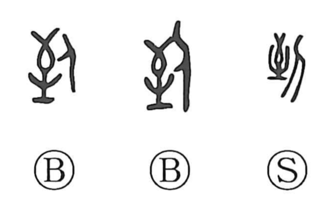

到

Kun: itaru, tsuku | On: tou
to arrive ・ to reach
Explanation
In the bronze inscriptions the character appears as a form combining 至 and a person, depicting someone standing at the spot an arrow has reached. Since 至 shows the point hit by a shot arrow, placing a person there naturally gives the sense of to arrive or to be at a destination. From this image also grow nuances of coming to the very end or utmost, hence compounds such as 到底 and 到頭 that convey eventuality, culmination, and thoroughness. In early usage this same graph could also mean to do or to cause; over time these strands differentiated, yielding the modern characters 到 for arrival and 致 for causing.